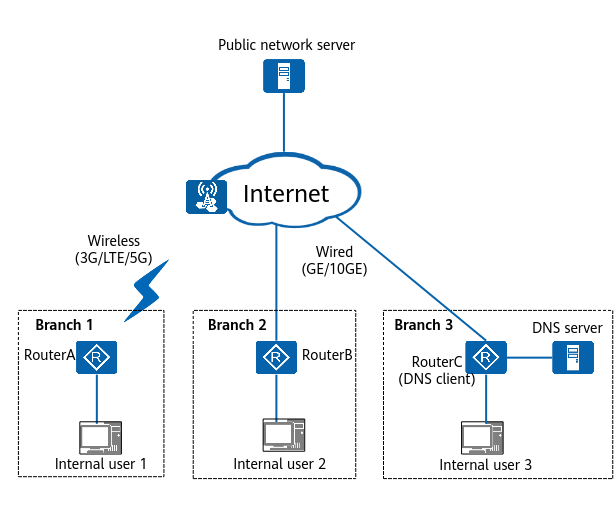
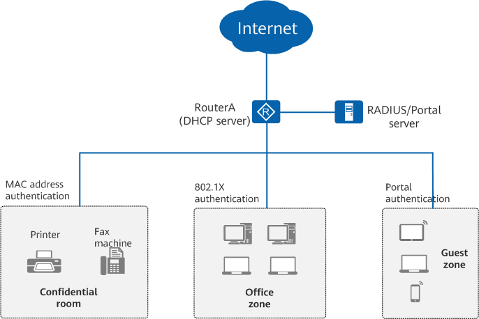
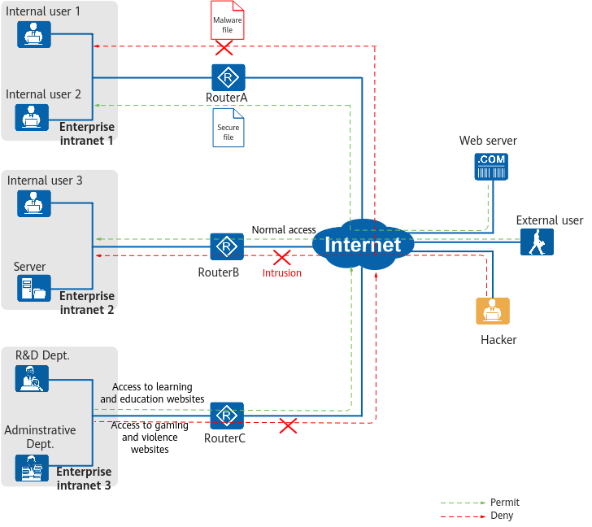

Multi-Link Access to the Internet
In Figure 1, RouterA, RouterB, and RouterC are egress gateways of the enterprise intranet and provide cost-effective and reliable Internet access through wireless (3G, LTE, and 5G) and wired (GE and 10GE) interfaces.
ARs offer the following functions to meet a range of network requirements:
- Provide wired (GE and 10GE) and wireless (3G, LTE, and 5G) interfaces for connecting enterprise branches to the Internet. In wired access mode, ARs can obtain IP addresses for Internet access through static IP address configuration, DHCP (as DHCP clients), or PPPoE (as PPPoE clients).
- Support Network Address Translation (NAT) that enables internal users to use private IP addresses for accessing external resources. This overcomes the public address shortage at enterprise branches.
- Allow internal users' access to network resources through domain names. ARs can function as DNS clients to dynamically obtain IP addresses that map domain names from the DNS server, facilitating network resource access.
Figure 1 ARs as enterprise egress gateways for Internet access
User Access and Authentication
In Figure 2, an enterprise uses the Router as the egress gateway to connect to the Internet and uses RouterA to connect the confidential room, office zone, and guest zone to the Router. RouterA integrates terminal security status with Network Admission Control (NAC) and takes security control measures such as check, isolation, hardening, and audit on terminals that attempt to access the network. This secures each terminal's access and the entire enterprise network.
ARs support NAC to ensure user access security in different application scenarios. The following authentication modes are supported:
- 802.1X authentication: verifies user identities and controls network access rights on ports of access devices. This mode is applicable to newly deployed networks with highly centralized users and high information security requirements.
- MAC address authentication: controls network access rights of a user based on the user's access port and terminal MAC address. This mode applies when dumb terminals that do not require high access security, such as printers and fax machines, need to be authenticated. In addition, ARs can function as DHCP servers to allocate IP addresses to authenticated terminals.
- Portal authentication: requires users to complete authentication on portal websites. Users must be authenticated on the web portal when attempting to access the network. They can access only specified network resources if the authentication fails, and can access other network resources only after passing the authentication. This mode is applicable to networks with scattered users who frequently move around.
Figure 2 User access and authentication
Security Protection
ARs provide multi-dimensional security protection functions, such as Intrusion Prevention System (IPS), URL filtering, and antivirus, to provide comprehensive security protection for enterprises.
In Figure 3:
- The egress gateway RouterA is configured with the antivirus function. It uses the antivirus signature database to detect the files downloaded by internal users from the external web server. With this function, it allows only secure files to be transferred to the intranet, and blocks or generates alerts for detected malware files.
- Another egress gateway RouterB has IPS deployed to defend against hackers and protect internal hosts against viruses and intrusions from the external network. When using the attack signature database to detect intrusion behaviors in internal users' traffic, RouterB blocks illegitimate traffic and allows traffic without intrusion behaviors to pass through.
- RouterC, also an egress gateway, has the URL filtering function configured to regulate internal users' online behaviors. It controls users' URL access requests based on the URL blacklist, URL whitelist, and URL category. For example, RouterC allows users to access learning and education websites and forbids access to gaming and violent websites.
Figure 3 Security protection